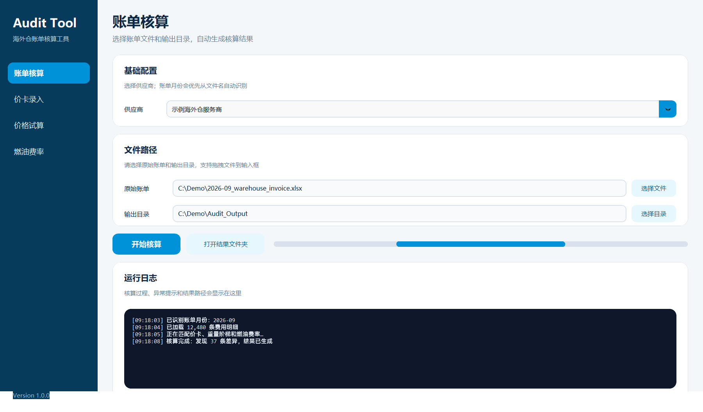
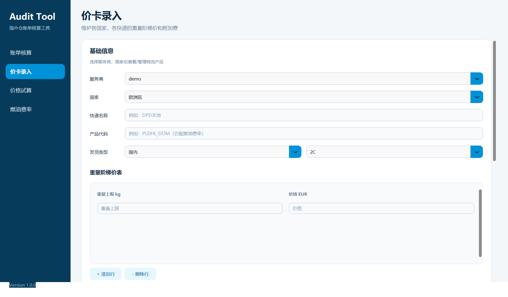
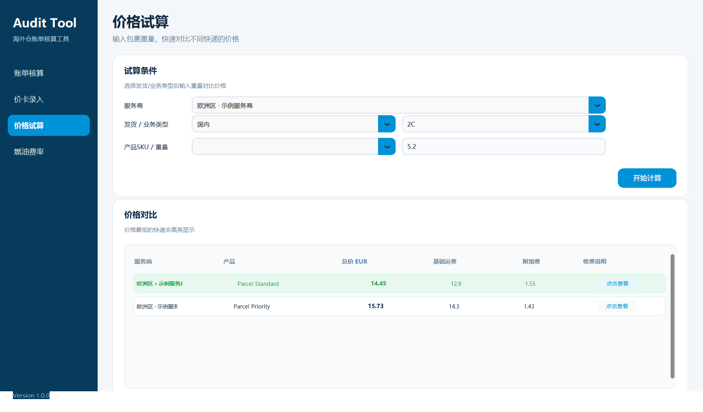
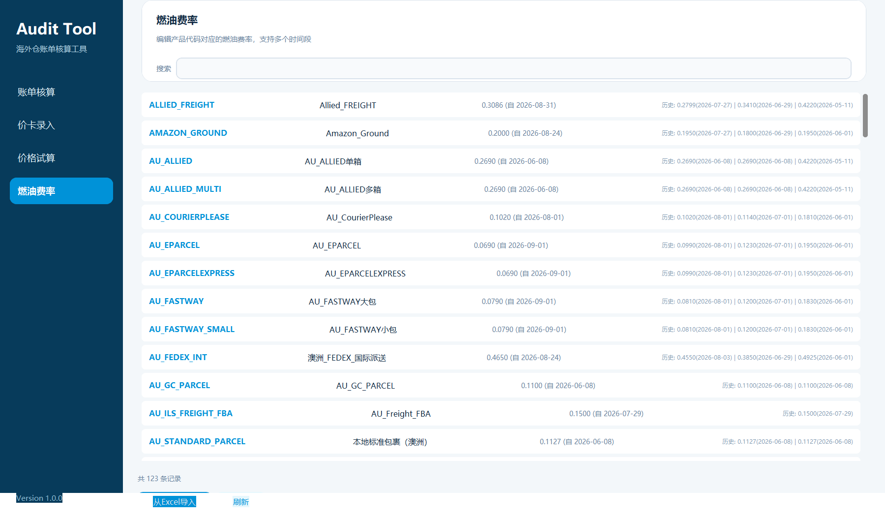

CASE 003 · FINANCE AUTOMATION
海外仓账单
审核与测算系统
将报价卡、燃油费率、账单明细和核验规则串成可复核工作流，帮助业务快速定位异常费用并追溯计算依据。

批量审核导入账单并自动匹配规则
报价卡集中维护计费基础
历史费率支持燃油附加费追溯
可复核显示计算过程与偏差
AUDIT WORKFLOW
把人工核账变成结构化流程
以下均为真实运行程序的界面截图；客户、渠道、价格和账单数值使用合成演示数据。完整业务源码保持私有，避免暴露商业规则。



DEMO FILM